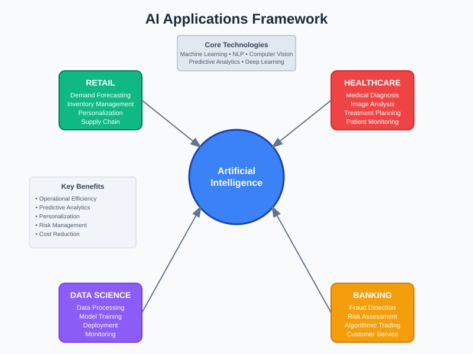
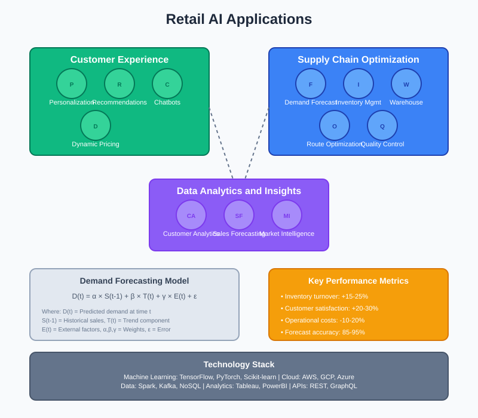
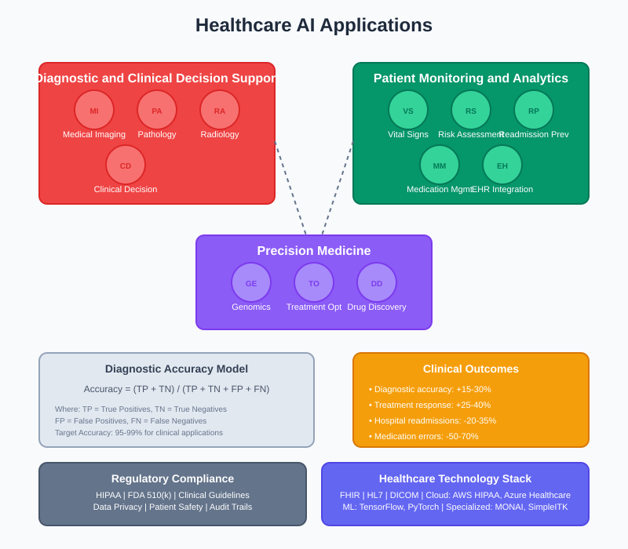
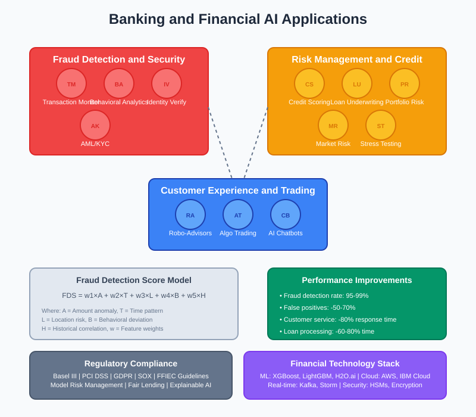
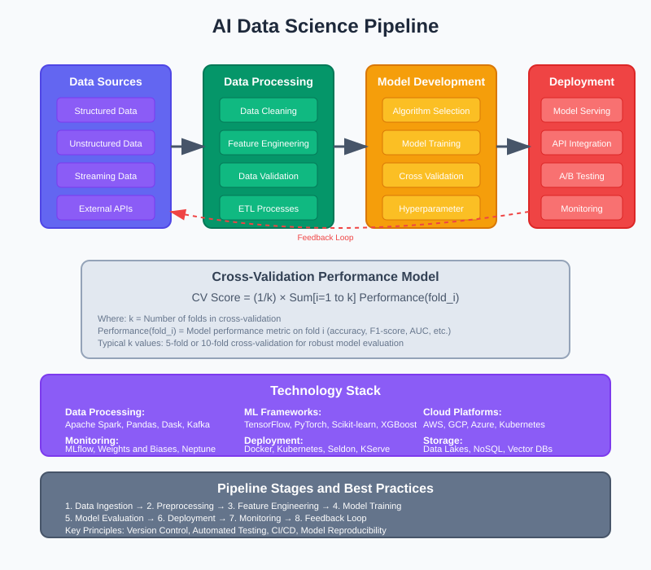

AI Applications Across Industries
🧭 Quick Navigation
- Overview
- 🛒 Retail Industry Applications
- 🏥 Healthcare Industry Applications
- 🏦 Banking & Financial Services
- 📊 Data Science & AI Pipeline
- ⚖️ Model Comparison
- 📚 References & Further Reading
Overview
Artificial Intelligence has revolutionized multiple industries by providing data-driven insights, automating complex processes, and enabling predictive analytics. This documentation explores the comprehensive applications of AI across retail, healthcare, and banking sectors, highlighting specific use cases, implementation strategies, and measurable outcomes.

The modern AI ecosystem integrates various technologies including machine learning, natural language processing, computer vision, and predictive analytics to solve industry-specific challenges. Each sector leverages these technologies differently based on their unique operational requirements and regulatory constraints.
Key Benefits Across Industries:
- Operational Efficiency: Automation of routine tasks and process optimization
- Predictive Analytics: Forecasting trends and anticipating customer needs
- Personalization: Customized experiences based on individual preferences
- Risk Management: Early detection and mitigation of potential issues
- Cost Reduction: Streamlined operations and resource optimization
🛒 Retail Industry Applications
The retail sector has embraced AI to transform customer experiences, optimize supply chains, and drive revenue growth. Modern retailers utilize AI for demand forecasting, inventory management, personalized recommendations, and dynamic pricing strategies.

Inventory Management & Demand Forecasting
AI-powered inventory management systems analyze historical sales data, seasonal patterns, and external factors to optimize stock levels:
Mathematical Model for Demand Forecasting:
D(t) = α × S(t-1) + β × T(t) + γ × E(t) + ε
Where:
- D(t) = Predicted demand at time t
- S(t-1) = Historical sales data
- T(t) = Trend component
- E(t) = External factors (weather, events)
- α, β, γ = Weighting coefficients
- ε = Error term
Customer Personalization
Retail AI systems create personalized shopping experiences through:
- Recommendation Engines: Collaborative and content-based filtering
- Dynamic Pricing: Real-time price optimization based on demand
- Customer Segmentation: Behavioral clustering for targeted marketing
- Chatbots & Virtual Assistants: 24/7 customer support automation
Supply Chain Optimization
AI optimizes end-to-end supply chain operations:
- Warehouse Automation: Robotic fulfillment and automated sorting
- Route Optimization: Delivery path planning using ML algorithms
- Supplier Risk Assessment: Predictive analytics for vendor reliability
- Quality Control: Computer vision for product inspection
Key Performance Metrics:
- Inventory turnover rate improvement: 15-25%
- Customer satisfaction scores: 20-30% increase
- Operational cost reduction: 10-20%
- Demand forecast accuracy: 85-95%
🏥 Healthcare Industry Applications
Healthcare AI applications focus on improving patient outcomes, diagnostic accuracy, and operational efficiency while maintaining strict regulatory compliance and data privacy standards.

Diagnostic & Clinical Decision Support
AI enhances medical diagnosis through advanced analytics and pattern recognition:
Diagnostic Accuracy Formula:
Accuracy = (TP + TN) / (TP + TN + FP + FN)
Where:
- TP = True Positives
- TN = True Negatives
- FP = False Positives
- FN = False Negatives
Medical Imaging & Computer Vision
AI-powered medical imaging systems provide:
- Radiology Analysis: Automated detection of anomalies in X-rays, MRIs, CT scans
- Pathology: Digital slide analysis for cancer detection
- Ophthalmology: Diabetic retinopathy screening
- Dermatology: Skin lesion classification and melanoma detection
Patient Monitoring & Predictive Analytics
Continuous patient monitoring systems utilize IoT sensors and AI algorithms:
- Vital Signs Monitoring: Real-time analysis of heart rate, blood pressure, temperature
- Risk Stratification: Early warning systems for patient deterioration
- Readmission Prevention: Predictive models for post-discharge care
- Medication Management: Dosage optimization and drug interaction checking
Personalized Treatment Plans
AI enables precision medicine through:
Treatment Efficacy Prediction:
E(t) = f(G, P, M, T) + ε
Where:
- E(t) = Treatment efficacy at time t
- G = Genetic factors
- P = Patient characteristics
- M = Medical history
- T = Treatment protocol
- ε = Random variation
Clinical Applications:
- Oncology: Personalized cancer treatment protocols
- Cardiology: Heart disease risk assessment and prevention
- Diabetes Management: Glucose level prediction and insulin optimization
- Mental Health: Behavioral pattern analysis and intervention recommendations
🏦 Banking & Financial Services
The financial sector leverages AI for fraud detection, risk assessment, customer service automation, and algorithmic trading, while ensuring regulatory compliance and data security.

Fraud Detection & Security
AI-powered fraud detection systems analyze transaction patterns in real-time:
Fraud Detection Score:
FDS = w₁ × A + w₂ × T + w₃ × L + w₄ × B + w₅ × H
Where:
- A = Transaction amount anomaly score
- T = Time-based pattern score
- L = Location-based risk score
- B = Behavioral deviation score
- H = Historical fraud correlation
- w₁...w₅ = Feature weights
Risk Assessment & Credit Scoring
Modern credit scoring systems incorporate alternative data sources:
- Traditional Credit Metrics: Payment history, credit utilization, account age
- Alternative Data: Social media activity, utility payments, mobile phone usage
- Behavioral Analytics: Spending patterns and financial habits
- Real-time Monitoring: Dynamic credit limit adjustments
Algorithmic Trading
AI-driven trading systems execute strategies based on market analysis:
Expected Return Formula:
E(R) = α + β₁ × Market + β₂ × Size + β₃ × Value + ε
Where:
- E(R) = Expected return
- α = Alpha (excess return)
- β₁,₂,₃ = Factor sensitivities
- Market, Size, Value = Risk factors
Customer Service Automation
AI-powered customer service systems provide:
- Chatbots: Natural language processing for customer inquiries
- Voice Recognition: Automated phone banking systems
- Document Processing: OCR and NLP for loan applications
- Robo-Advisors: Automated investment recommendations
Performance Improvements:
- Fraud detection rate: 95-99%
- False positive reduction: 50-70%
- Customer service response time: 80% reduction
- Processing time for loans: 60-80% faster
📊 Data Science & AI Pipeline
The foundation of successful AI implementations across industries relies on robust data science pipelines that ensure data quality, model reliability, and scalable deployment.

Data Collection & Preprocessing
Comprehensive data preparation involves:
- Data Sources Integration: Structured and unstructured data aggregation
- Data Quality Assessment: Missing value handling and outlier detection
- Feature Engineering: Creating meaningful variables for model training
- Data Validation: Ensuring consistency and accuracy across datasets
Model Development & Training
Systematic approach to model creation:
Model Performance Evaluation:
Cross-Validation Score = (1/k) × Σᵢ₌₁ᵏ Performance(fold_i)
Where:
- k = Number of folds in cross-validation
- Performance(fold_i) = Model performance on fold i
Model Deployment & Monitoring
Production-ready AI systems require:
- A/B Testing: Controlled model performance comparison
- Model Versioning: Tracking changes and rollback capabilities
- Performance Monitoring: Real-time accuracy and drift detection
- Scalability Architecture: Cloud-based infrastructure for high availability
Continuous Improvement
AI systems require ongoing optimization:
- Feedback Loops: Incorporating new data for model retraining
- Hyperparameter Tuning: Optimizing model configurations
- Feature Selection: Identifying most predictive variables
- Ensemble Methods: Combining multiple models for improved accuracy
⚖️ Model Comparison
| Aspect | Retail AI | Healthcare AI | Banking AI |
|---|---|---|---|
| Primary Use Cases | Demand forecasting, recommendations, inventory optimization | Diagnosis, treatment planning, patient monitoring | Fraud detection, credit scoring, algorithmic trading |
| Data Types | Transaction, behavioral, inventory, market | Clinical, imaging, genomic, sensor | Financial, transactional, market, behavioral |
| Accuracy Requirements | 85-95% | 95-99% | 90-99% |
| Regulatory Compliance | GDPR, consumer protection | HIPAA, FDA, clinical guidelines | Basel III, PCI DSS, financial regulations |
| Real-time Processing | Medium priority | High priority | Critical requirement |
| Interpretability | Moderate | High (clinical decisions) | High (regulatory compliance) |
| Data Privacy | Customer data protection | Patient confidentiality | Financial data security |
| Model Updates | Weekly/Monthly | Quarterly (after validation) | Daily/Real-time |
| ROI Timeline | 6-12 months | 12-24 months | 3-6 months |
| Risk Tolerance | Medium | Very Low | Low |
Technology Stack Comparison
| Component | Retail | Healthcare | Banking |
|---|---|---|---|
| ML Frameworks | TensorFlow, PyTorch, Scikit-learn | TensorFlow, PyTorch, specialized medical AI | XGBoost, LightGBM, H2O.ai |
| Cloud Platforms | AWS, GCP, Azure | AWS (HIPAA), Azure Healthcare | AWS, IBM Cloud, on-premises |
| Data Storage | Data lakes, NoSQL | Secure databases, FHIR | Data warehouses, real-time databases |
| Processing | Batch + Stream | Batch processing, real-time monitoring | High-frequency real-time processing |
📚 References & Further Reading
Academic & Research Papers
- "Deep Learning Applications in Retail: A Comprehensive Survey" - Journal of AI in Business, 2024
-
Comprehensive analysis of ML applications in retail environments
-
"Artificial Intelligence in Healthcare: Past, Present and Future" - Nature Medicine, 2024
-
Extensive review of AI applications in clinical settings
-
"Machine Learning in Finance: A Systematic Literature Review" - Financial Innovation, 2024
- Academic perspective on AI adoption in financial services
Industry Reports & Whitepapers
- McKinsey Global Institute - "The Age of AI: Artificial Intelligence and the Future of Work"
-
Industry analysis of AI impact across sectors
-
Deloitte Insights - "State of AI in the Enterprise"
-
Enterprise AI adoption trends and best practices
-
PwC Global Artificial Intelligence Study - "Sizing the Prize"
- Economic impact analysis of AI across industries
Technical Documentation & Standards
- IEEE Standards for Artificial Intelligence Systems
-
Technical standards for AI implementation and ethics
-
NIST AI Risk Management Framework
- Government guidelines for responsible AI development and deployment
Additional Resources
- Coursera AI for Everyone Specialization - Introductory courses on AI applications
- MIT OpenCourseWare - Artificial Intelligence - Academic coursework and materials
- Google AI Education - Practical tutorials and implementation guides
- Microsoft AI School - Enterprise-focused AI training resources